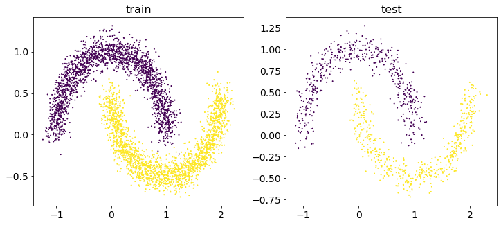
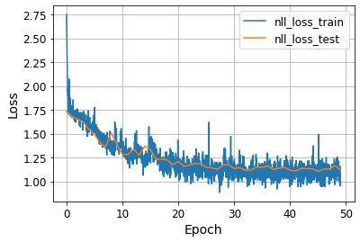
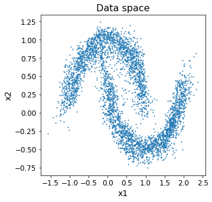
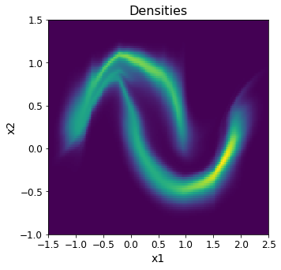
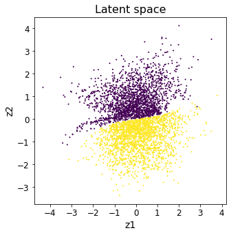

import os
import numpy as np
import matplotlib.pyplot as plt
from sklearn.datasets import make_moons
from collections import defaultdict
from tqdm.notebook import tqdm
from typing import Tuple
import torch
import torch.optim as optim
import torch.nn as nn
import torch.nn.functional as F
import torch.utils.data as data
USE_CUDA = torch.cuda.is_available()REAL-NVP Modified
We have already familiarized ourselves with normalizing flows and REAL-nvp method. For best understanding ,please, write the paper RealNVP.
1. Data
TICKS_FONT_SIZE = 12
LEGEND_FONT_SIZE = 12
LABEL_FONT_SIZE = 14
TITLE_FONT_SIZE = 16def visualize_2d_data(train_data, test_data, train_labels=None, test_labels=None):
fig, (ax1, ax2) = plt.subplots(1, 2, figsize=(12, 5))
ax1.set_title('train', fontsize=TITLE_FONT_SIZE)
ax1.scatter(train_data[:, 0], train_data[:, 1], s=1, c=train_labels)
ax1.tick_params(labelsize=LABEL_FONT_SIZE)
ax2.set_title('test', fontsize=TITLE_FONT_SIZE)
ax2.scatter(test_data[:, 0], test_data[:, 1], s=1, c=test_labels)
ax2.tick_params(labelsize=LABEL_FONT_SIZE)
plt.show()def generate_moons_data(count: int) -> tuple:
data, labels = make_moons(n_samples=count, noise=0.1)
data = data.astype("float32")
split = int(0.8 * count)
train_data, test_data = data[:split], data[split:]
train_labels, test_labels = labels[:split], labels[split:]
return train_data, train_labels, test_data, test_labelsCOUNT = 5000
train_data, train_labels, test_data, test_labels = generate_moons_data(COUNT)
visualize_2d_data(train_data, test_data, train_labels, test_labels)
2. Transformation
REAL-NVP model is a sequence of the affine coupling layers.
Forward transform: \[ \begin{cases} \mathbf{y}_1 &= \mathbf{x}_1; \\ \mathbf{y}_2 &= \mathbf{x}_2 \odot \exp (s(\mathbf{x}_1)) + t(\mathbf{x}_1). \end{cases} \]
Inverse transform: \[ \begin{cases} \mathbf{x}_1 &= \mathbf{y}_1; \\ \mathbf{x}_2 &= (\mathbf{y}_2 - t(\mathbf{y}_1)) \odot \exp ( - s(\mathbf{y}_1)). \end{cases} \]
Here \(s(\cdot)\) and \(t(\cdot)\) are outputs of neural network. In this task our networks will be fully connected MLP.
class FullyConnectedMLP(nn.Module):
def __init__(self, input_shape: int, hiddens: list, output_shape: int) -> None:
assert isinstance(hiddens, list)
super().__init__()
self.input_shape = (input_shape,)
self.output_shape = (output_shape,)
self.hiddens = hiddens
model = []
# ====
# your code
# Stack Dense layers with ReLU activation.
# Note that you do not have to add relu after the last dense layer
prev_h = input_shape
for h in hiddens:
model.append(nn.Linear(prev_h, h))
model.append(nn.ReLU())
prev_h = h
model.append(nn.Linear(hiddens[-1], output_shape))
# ====
self.net = nn.Sequential(*model)
def forward(self, x: torch.Tensor) -> torch.Tensor:
# ====
# your code
# apply network that was defined in __init__ and return the output
batch_size = x.shape[0]
x = x.view(batch_size, -1)
return self.net(x).view(batch_size, *self.output_shape)
# ====class AffineCouplingLayer(nn.Module):
def __init__(self, parity_type: bool, n_hiddens: list) -> None:
assert isinstance(parity_type, bool)
assert isinstance(n_hiddens, list)
super().__init__()
self.mask = self.build_mask(parity_type=parity_type)
self.mlp = FullyConnectedMLP(input_shape=2, hiddens=n_hiddens, output_shape=2)
def build_mask(self, parity_type: bool) -> torch.Tensor:
# ====
# your code
# the mask is extremely simple
# it is a float tensor of two scalars (1.0 and 0.0)
# the partition_type defines the order of these two scalars
if parity_type:
return torch.FloatTensor([1.0, 0.0])
else:
return torch.FloatTensor([0.0, 1.0])
# ====
def forward(self, x: torch.Tensor, invert: bool = False) -> tuple:
# ====
# your code
# 1) mask our input x, using self.mask
# 2) apply mlp to masked input to get s and t
batch_size = x.shape[0]
mask = self.mask.repeat(batch_size, 1).cuda()
x_masked = x * mask
s, t = self.mlp(x_masked).split(1, dim=1)
# ====
# we invert mask here
t = t * (1.0 - mask)
s = s * (1.0 - mask)
# ====
# your code
# apply forward (invert=False) or inverse (invert=True) transform (invert=False)
if invert:
x = (x - t) * torch.exp(-s)
else:
x = x * torch.exp(s) + t
# ====
# the output is transformed input
# and logarithm of jacobian (which equals to s)
return x, s
3. RealNVP
We are ready to define RealNVP model. The model objective is the negative value of log-likelihood. Log-likelihood is given by the change of variables (CoV) theorem: \[ \log p(\mathbf{x}| \boldsymbol{\theta}) = \log p(\mathbf{z}) + \log \left|\det \left( \frac{\partial \mathbf{z}}{\partial \mathbf{x}} \right) \right| = \log p(f(\mathbf{x}, \boldsymbol{\theta})) + \log \left|\det \left( \frac{\partial f(\mathbf{x}, \boldsymbol{\theta})}{\partial \mathbf{x}} \right) \right|. \]
class RealNVP(nn.Module):
def __init__(self) -> None:
super().__init__()
# base distribution p(z) is normal
self.prior = torch.distributions.Normal(torch.tensor(0.0), torch.tensor(1.0))
# ====
# your code
# apply sequence of AffineCouplingLayer with alternating parity_type
# 6 layers is sufficient (with 2 hidden layers in each affine layer)
self.transforms = nn.ModuleList(
[
AffineCouplingLayer(True, n_hiddens=[64, 64]),
AffineCouplingLayer(False, n_hiddens=[64, 64]),
AffineCouplingLayer(True, n_hiddens=[64, 64]),
AffineCouplingLayer(False, n_hiddens=[64, 64]),
AffineCouplingLayer(True, n_hiddens=[64, 64]),
AffineCouplingLayer(False, n_hiddens=[64, 64]),
]
)
# ====
def forward(self, x: torch.Tensor, invert: bool = False) -> tuple:
z = x
log_det = 0.0
# ====
# your code
# apply sequence of transforms and sum all of log_dets
# if invert == True, you have to apply transforms in reversed order (from last to first!) with invert=True flag
transforms = reversed(self.transforms) if invert else self.transforms
for transform in transforms:
z, delta_log_det = transform(z, invert=invert)
log_det += delta_log_det
# ====
return z, log_det
def log_prob(self, x: torch.Tensor) -> torch.Tensor:
# ====
# your code
# 1) make forward pass with right inverse flag
# 2) sum log_det with log of base distribution (log p(z)) - see the formula above
# 3) we will get tensor of shape [batch_size, 2] - sum it over the the last dimension
z, log_det = self.forward(x, invert=False)
return torch.sum(log_det, dim=1) + torch.sum(self.prior.log_prob(z), dim=1)
# ====
def loss(self, x: torch.Tensor) -> dict:
log_prob = self.log_prob(x)
# log_prob should be a vector of batch_size
assert len(log_prob.shape) == 1
return {"nll_loss": -log_prob.mean()}
def sample(self, n: int) -> torch.Tensor:
# ====
# your code
# 1) sample from the prior
# 2) apply the forward pass with the right inverse flag
# 3) return only the first output of the forward pass (the second is the log of determinant - we don't need it in sampling)
z = self.prior.sample([n, 2]).cuda()
return self.forward(z, invert=True)[0]
# ====4. Training
def train_epoch(
model: object,
train_loader: object,
optimizer: object,
use_cuda: bool,
loss_key: str = "total",
) -> defaultdict:
model.train()
stats = defaultdict(list)
for x in train_loader:
if use_cuda:
x = x.cuda()
losses = model.loss(x)
optimizer.zero_grad()
losses[loss_key].backward()
optimizer.step()
for k, v in losses.items():
stats[k].append(v.item())
return stats
def eval_model(model: object, data_loader: object, use_cuda: bool) -> defaultdict:
model.eval()
stats = defaultdict(float)
with torch.no_grad():
for x in data_loader:
if use_cuda:
x = x.cuda()
losses = model.loss(x)
for k, v in losses.items():
stats[k] += v.item() * x.shape[0]
for k in stats.keys():
stats[k] /= len(data_loader.dataset)
return stats
def train_model(
model: object,
train_loader: object,
test_loader: object,
epochs: int,
lr: float,
use_tqdm: bool = False,
use_cuda: bool = False,
loss_key: str = "total_loss",
) -> Tuple[dict, dict]:
optimizer = optim.Adam(model.parameters(), lr=lr)
train_losses = defaultdict(list)
test_losses = defaultdict(list)
forrange = tqdm(range(epochs)) if use_tqdm else range(epochs)
if use_cuda:
model = model.cuda()
for epoch in forrange:
model.train()
train_loss = train_epoch(model, train_loader, optimizer, use_cuda, loss_key)
test_loss = eval_model(model, test_loader, use_cuda)
for k in train_loss.keys():
train_losses[k].extend(train_loss[k])
test_losses[k].append(test_loss[k])
return dict(train_losses), dict(test_losses)# ====
# your code
# choose these parameters
BATCH_SIZE = 128 # any adequate value
EPOCHS = 50 # < 100
LR = 0.001 # < 1e-2
# ====
COUNT = 5000
train_data, train_labels, test_data, test_labels = generate_moons_data(COUNT)
loader_args = dict(batch_size=BATCH_SIZE, shuffle=True)
train_loader = torch.utils.data.DataLoader(train_data, **loader_args)
test_loader = torch.utils.data.DataLoader(test_data, **loader_args)
# model
model = RealNVP()
# train
train_losses, test_losses = train_model(
model,
train_loader,
test_loader,
epochs=EPOCHS,
lr=LR,
loss_key="nll_loss",
use_cuda=USE_CUDA,
use_tqdm=True,
)5.inference
def plot_training_curves(train_losses, test_losses, logscale_y=False, logscale_x=False):
n_train = len(train_losses[list(train_losses.keys())[0]])
n_test = len(test_losses[list(train_losses.keys())[0]])
x_train = np.linspace(0, n_test - 1, n_train)
x_test = np.arange(n_test)
plt.figure()
for key, value in train_losses.items():
plt.plot(x_train, value, label=key + '_train')
for key, value in test_losses.items():
plt.plot(x_test, value, label=key + '_test')
if logscale_y:
plt.semilogy()
if logscale_x:
plt.semilogx()
plt.legend(fontsize=LEGEND_FONT_SIZE)
plt.xlabel('Epoch', fontsize=LABEL_FONT_SIZE)
plt.ylabel('Loss', fontsize=LABEL_FONT_SIZE)
plt.xticks(fontsize=TICKS_FONT_SIZE)
plt.yticks(fontsize=TICKS_FONT_SIZE)
plt.grid()
plt.show()plot_training_curves(train_losses, test_losses)
def visualize_2d_densities(x_grid, y_grid, densities, title, xlabel=None, ylabel=None):
densities = densities.reshape([y_grid.shape[0], y_grid.shape[1]])
plt.figure(figsize=(5, 5))
plt.pcolor(x_grid, y_grid, densities)
plt.pcolor(x_grid, y_grid, densities)
plt.title(title, fontsize=TITLE_FONT_SIZE)
plt.xticks(fontsize=TICKS_FONT_SIZE)
plt.yticks(fontsize=TICKS_FONT_SIZE)
if xlabel is not None:
plt.xlabel(xlabel, fontsize=LABEL_FONT_SIZE)
if ylabel is not None:
plt.ylabel(ylabel, fontsize=LABEL_FONT_SIZE)
plt.show()
def visualize_2d_samples(data, title, labels=None, xlabel=None, ylabel=None):
plt.figure(figsize=(5, 5))
plt.scatter(data[:, 0], data[:, 1], s=1, c=labels)
plt.title(title, fontsize=TITLE_FONT_SIZE)
plt.xticks(fontsize=TICKS_FONT_SIZE)
plt.yticks(fontsize=TICKS_FONT_SIZE)
if xlabel is not None:
plt.xlabel(xlabel, fontsize=LABEL_FONT_SIZE)
if ylabel is not None:
plt.ylabel(ylabel, fontsize=LABEL_FONT_SIZE)
plt.show()# Samples
x_samples = model.sample(4000).cpu().detach().numpy()
visualize_2d_samples(x_samples, title="Data space", xlabel="x1", ylabel="x2")
# Density
dx, dy = 0.025, 0.025
x_lim = (-1.5, 2.5)
y_lim = (-1, 1.5)
y, x = np.mgrid[slice(y_lim[0], y_lim[1] + dy, dy), slice(x_lim[0], x_lim[1] + dx, dx)]
mesh_xs = torch.FloatTensor(np.stack([x, y], axis=2).reshape(-1, 2))
if USE_CUDA:
mesh_xs = mesh_xs.cuda()
densities = np.exp(model.log_prob(mesh_xs).cpu().detach().numpy())
# Latents
train_tensor = torch.FloatTensor(train_data)
if USE_CUDA:
train_tensor = train_tensor.cuda()
z = model(train_tensor)[0]
latents = z.cpu().detach().numpy()
visualize_2d_densities(x, y, densities, title="Densities", xlabel="x1", ylabel="x2")
visualize_2d_samples(
latents, title="Latent space", labels=train_labels, xlabel="z1", ylabel="z2"
)
MatplotlibDeprecationWarning: shading='flat' when X and Y have the same dimensions as C is deprecated since 3.3. Either specify the corners of the quadrilaterals with X and Y, or pass shading='auto', 'nearest' or 'gouraud', or set rcParams['pcolor.shading']. This will become an error two minor releases later.
plt.pcolor(x_grid, y_grid, densities)
<ipython-input-24-2953d9ef525c>:5: MatplotlibDeprecationWarning: shading='flat' when X and Y have the same dimensions as C is deprecated since 3.3. Either specify the corners of the quadrilaterals with X and Y, or pass shading='auto', 'nearest' or 'gouraud', or set rcParams['pcolor.shading']. This will become an error two minor releases later.
plt.pcolor(x_grid, y_grid, densities)
